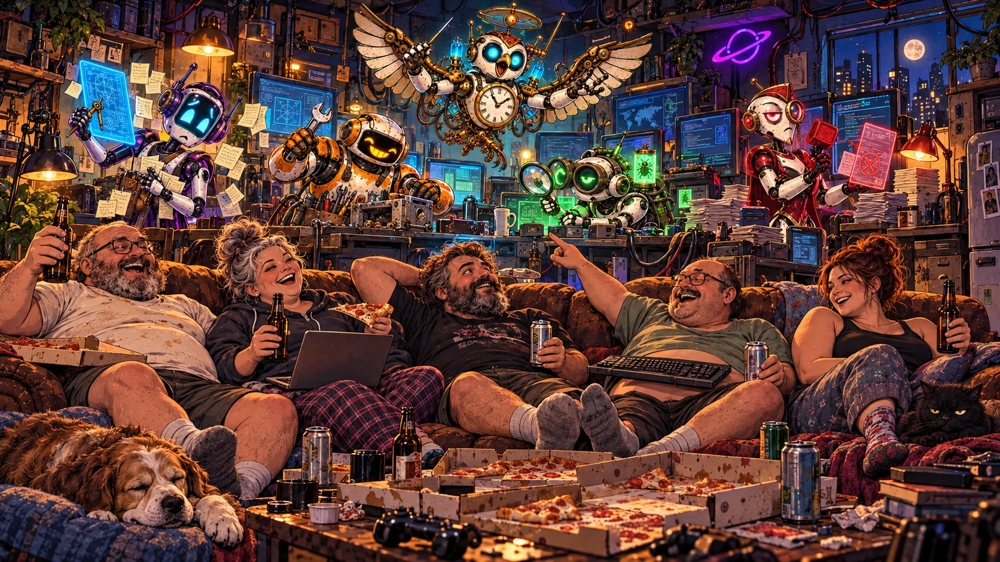
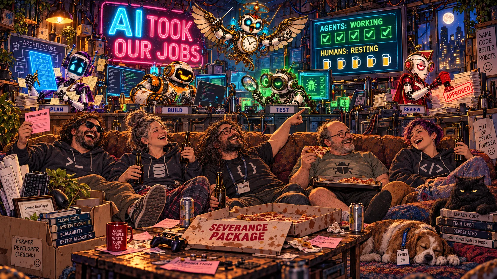
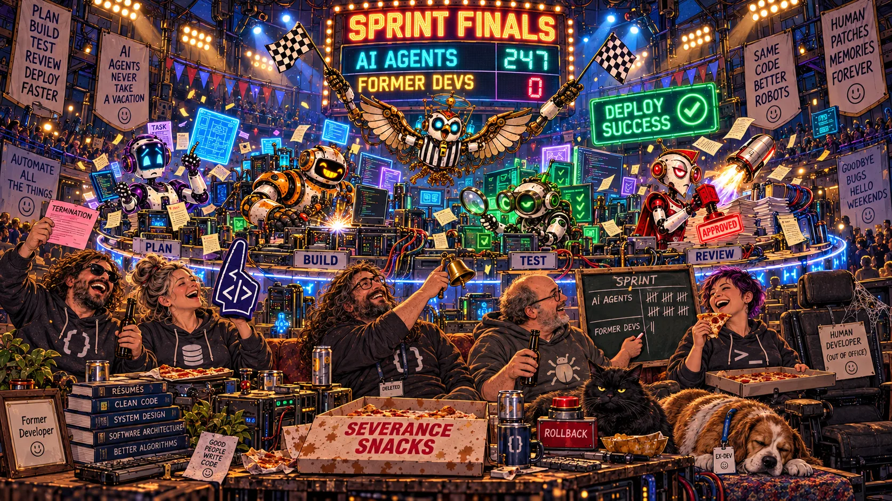
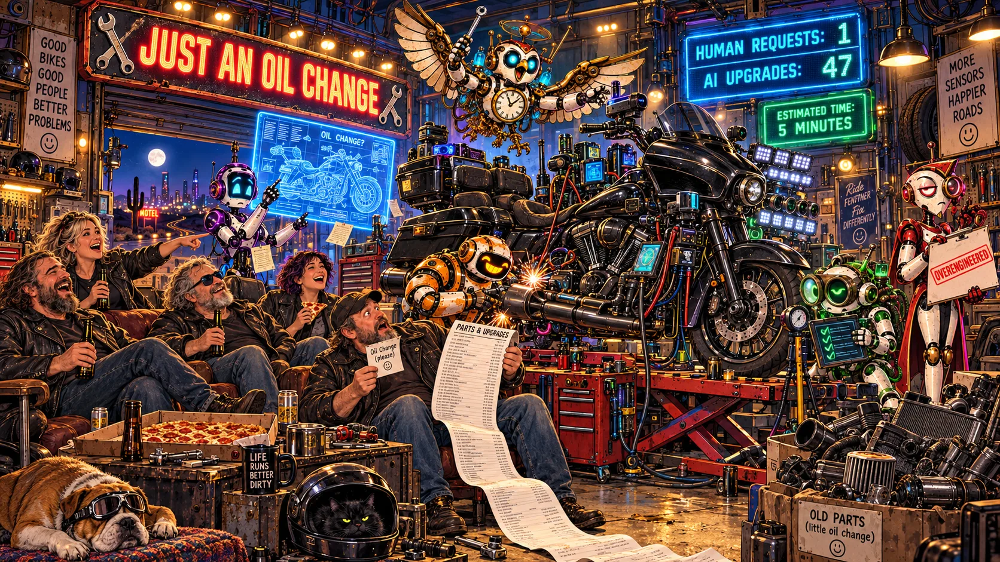
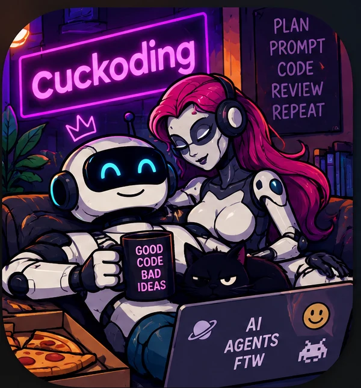

Controlled beta · local-first · macOS
Human ideas
Agent crew
One control room
Put your coding agents to work. Keep yourself in charge.
Register a project, connect the agents already on your Mac, give each one a role, then follow the work from specification to review without losing the durable trail.

01 Project-first
02 Role-driven
03 Durable state
04 Human gates
The new product flow
Projects first. Then the crew. Then the board.
Setup no longer fabricates a task or starts an agent. Each decision happens on the surface where it belongs.
-
01
Available now
Register the project
Use the native folder picker, name the project, choose a Git branch, and review. Empty folders, fresh Git repositories, and existing projects are all valid starting points.
Project → Repository → Review -
02
Available now
Build the agent crew
After registration, project settings opens. Add multiple local agent connections and assign Specifications, Coding, Review, or your own custom roles.
Project settings → Agents → Roles -
03
Next in beta
Create a board and tasks
Give each project one or more boards, choose a versioned workflow, add tasks, and start work through Specifications → Coding → Review.
Board → Task → Run -
04
Foundation live
Monitor the whole operation
The Agent Floor already exposes durable run activity. The next dashboard joins project health, resources, agents, boards, and blockers into one operational view.
Dashboard → Agent Floor → Evidence

Agents are connections · roles are responsibilities
Assemble a crew that fits the project.
One runtime can fill several roles, or each role can have its own specialist. Configuration is versioned; active and historical work keeps the assignments it started with.


Codex and Claude Code are supported launch adapters. Cursor Agent, OpenCode, and Custom Agent can be configured now but remain setup-only until their execution adapters pass conformance.
Per-project Kanban · next in beta
A board is where work gets a life cycle.
Tasks move through explicit stages and gates. Review can send work back with findings, improve the specification, or mark the task complete. Drag and drop will be optional; every transition will have an accessible action.
Specifications→
Coding→
Review↺ / ✓

One global dashboard
See who is doing what. See what it costs.
Monitor project health, active role, runtime, model when known, elapsed time, CPU, memory, token and cost confidence, blockers, and the latest durable event—without storing hidden chain-of-thought.
- Workingcoding · 18m
- Needs review2 findings
- Sleepingcheckpoint safe
- Blockedhuman decision
Ponytail inside
Ask for an oil change. Get an oil change.
Cuckoding treats minimalism as an engineering constraint. Agents search existing code, prefer native tools, make the smallest coherent change, and prove the behavior with focused checks.
- RTK keeps command output focused.
- XERJ anchors unfamiliar work in indexed reference source.
- Ponytail cuts speculative abstractions and dependency sprawl.

Boring machinery · wild crew
A local stack built to survive the night shift.
Elixir / OTP
Supervised orchestration and recovery.
Phoenix LiveView
A loopback-only real-time interface.
SQLite + WAL
Durable state, events, and projections.
Git worktrees
Reviewable per-run branches.
Tauri + Rust
Native tray shell and diagnostics.
macOS Keychain
Opaque secret references outside agents.
The honest boundary
Local power. Real limits.
The MVP runs agent processes on your Mac. Worktrees, policy, permission grants, and human gates reduce risk—but the trusted-host runner is not a container or sandbox.
- Apple Silicon macOS is the first supported target.
- Project setup never starts a board, task, worktree, or agent.
- Cuckoding never autonomously merges or deploys production changes.

Human ideas · agent crew · durable evidence
Make the agents busy.
Keep the work legible.
Cuckoding is open source and preparing for controlled beta.
Follow development on GitHub